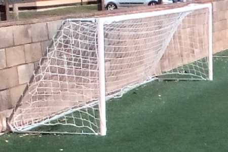
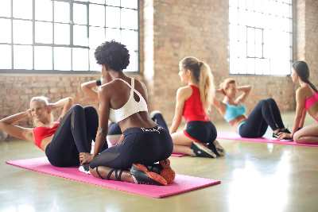

Come and enjoy a wide range of activities at a fabulous, community-funded sports hall. We cater for everyone whether you’re a sports fanatic or not. Join our clubs, have fun at our events or hire the hall for your own functions.

Facilities:
In a joint venture with the community of Webberbridge and Sport England, the donation of an old barn has been rejuvenated into a state-of-the-art, multipurpose sports hall. As a result, a diverse group of clubs and events take advantage of the wide range of high-quality equipment. The facilities available at Webberbridge Sports Hall makes it an excellent contribution of sports and local events to the Webberbridge community.

Events:
The Webberbridge Sports Hall is often the venue of choice for a wide range of committee fundraising events of the local village. The sports hall has hosted many successful events from tugs of war to welly wanging competitions. Webberbridge locals and friends can also enjoy the use of the sports hall for local clubs and sessions including Badminton, Cricket and Mini Football. Other sports and private functions at competitive rates provide good incentives for any event to be hosted at Webberbridge Sports Hall.